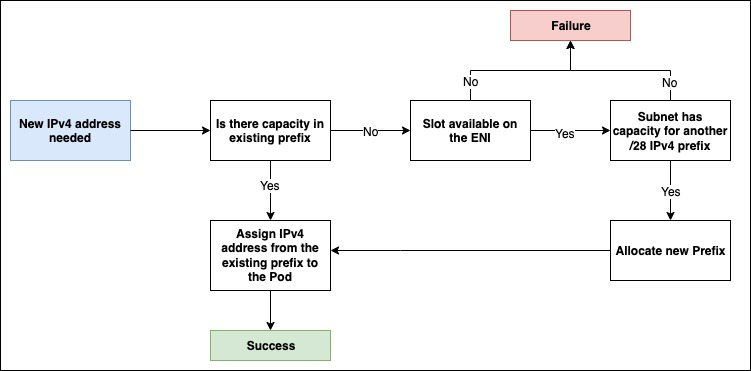

윈도우용 Prefix 모드¶
Amazon EKS에서 윈도우 호스트에서 실행되는 각 파드는 기본적으로 VPC 리소스 컨트롤러에 의해 보조 IP 주소가 할당됩니다. 이 IP 주소는 호스트의 서브넷에서 할당되어 VPC에서 라우팅이 가능한 주소입니다. Linux에서는 인스턴스에 연결된 각 ENI에 보조 IP 주소 또는 /28 CIDR(Prefix)로 채울 수 있는 여러 슬롯이 있습니다. 하지만 윈도우 호스트는 단일 ENI와 슬롯만 지원합니다. 보조 IP 주소만 사용하면 할당할 수 있는 IP 주소가 많더라도 윈도우 호스트에서 실행할 수 있는 파드 수가 인위적으로 제한될 수 있습니다.
특히 비교적 작은 인스턴스 유형을 사용하는 경우 윈도우 호스트에서 파드 밀도를 높이기 위해 윈도우 노드에 Prefix Delegation을 활성화할 수 있습니다. Prefix Delegation을 활성화하면 /28 IPv4 Prefix가 보조 IP 주소 대신 ENI 슬롯에 할당됩니다. Prefix Delegation은 amazon-vpc-cni 컨피그맵에 enable-windows-prefix-delegation: "true"항목을 추가하여 활성화할 수 있습니다. 해당 컨피그맵은 윈도우 지원을 활성화하기 위해 enable-windows-ipam: "true" 항목을 설정했던 것과 동일한 컨피그맵입니다.
EKS 사용자 가이드에 설명된 안내에 따라 윈도우 노드에 대해 Prefix Delegation 모드를 활성화합니다.

그림: 보조 IP 모드와 Prefix Delegation 모드의 비교
네트워크 인터페이스에 할당할 수 있는 최대 IP 주소 수는 인스턴스 유형과 크기에 따라 다릅니다. 네트워크 인터페이스에 할당된 각 Prefix는 가용 슬롯을 사용합니다. 예를 들어, c5.large 인스턴스는 네트워크 인터페이스당 10 슬롯으로 제한됩니다. 네트워크 인터페이스의 첫 번째 슬롯은 항상 인터페이스의 기본 IP 주소로 사용되므로 Prefix 및/또는 보조 IP 주소를 위한 슬롯이 9개만 남게 됩니다. 이러한 슬롯에 Prefix가 할당된 경우 노드는 (9 * 16) 144 IP 주소를 지원할 수 있지만 보조 IP 주소가 할당된 경우 9개의 IP 주소만 지원할 수 있습니다. 자세한 내용은 인스턴스 유형별 네트워크 인터페이스당 IP 주소 및 네트워크 인터페이스에 Prefix 할당 설명서를 참조합니다.
워커 노드 초기화 중에 VPC 리소스 컨트롤러는 IP 주소의 웜 풀을 유지하여 파드 시작 속도를 높이기 위해 기본 ENI에 하나 이상의 Prefix를 할당합니다. 웜 풀에 보관할 Prefix 수는 amazon-vpc-cni 컨피그맵에서 다음 구성 매개변수를 구성하여 제어할 수 있습니다.
warm-prefix-target, 현재 필요 수량을 초과하여 할당할 Prefix 수warm-ip-target, 현재 필요 수량을 초과하여 할당할 IP 주소 수minimum-ip-target, 언제든지 사용할 수 있는 최소 IP 주소 수warm-ip-target및/또는minimum-ip-target가 적용된 경우,warm-prefix-target를 오버라이드합니다.
노드에 더 많은 파드가 스케줄링되면 기존 ENI에 대해 추가 Prefix가 요청됩니다. 노드에 파드가 스케줄링되면 VPC 리소스 컨트롤러는 먼저 노드의 기존 Prefix에서 IPv4 주소를 할당하려고 시도합니다. 만약 불가한 경우, 서브넷에 필요한 용량이 있는 한도 내에서 신규 IPv4 Prefix가 요청됩니다.

그림: IPv4 주소를 Pod에 할당하는 동안의 워크플로
권장 사항¶
다음과 같은 경우 Prefix Delegation 사용¶
워커 노드에서 파드 밀도 문제가 발생하는 경우 Prefix Delegation을 사용합니다. 오류를 방지하려면 Prefix 모드로 마이그레이션하기 전에 서브넷에서 /28 Prefix의 연속된 주소 블록이 있는지 확인할 것을 권장합니다. 서브넷 예약 세부 정보는 “서브넷 예약을 사용하여 서브넷 파편화(IPv4) 방지” 섹션을 참조합니다.
기본적으로 윈도우 노드의 max-pods는 110으로 설정되어 있습니다. 대부분의 인스턴스 유형에서는 이 정도면 충분합니다. 해당 한도를 늘리거나 줄이려면 사용자 데이터(User data)의 부트스트랩 명령어에 다음을 추가하세요.
다음과 같은 경우 Prefix Delegation을 권장하지 않음¶
서브넷이 매우 파편화되어 있고 사용 가능한 IP 주소가 부족하여 /28 Prefix를 만들 수 없는 경우에는 Prefix 모드를 사용하지 마십시오. Prefix가 생성되는 서브넷이 파편화 된 경우(사용량이 많고 보조 IP 주소가 흩어져 있는 서브넷), Prefix 연결에 실패할 수 있습니다. 신규 서브넷을 만들고 Prefix를 예약하면 이 문제를 피할 수 있습니다.
IPv4 주소를 보존하도록 Prefix Delegation 매개 변수 구성¶
warm-prefix-target, warm-ip-target 및 minimum-ip-target은 Prefix를 사용한 사전 스케일링 및 동적 스케일링의 동작을 미세조정하는 데 사용할 수 있습니다. 기본적으로 다음과 같은 값이 사용됩니다.
서브넷 예약을 사용하여 서브넷 파편화 (IPv4) 를 방지¶
EC2가 ENI에 /28 IPv4 Prefix를 할당할 경우, 해당 Prefix는 서브넷의 연속된 IP 주소 블록이어야 합니다. Prefix가 생성되는 서브넷이 파편화된 경우 (보조 IP 주소가 흩어져 있고 많이 사용되는 서브넷) Prefix 연결에 실패할 수 있으며 다음과 같은 노드 이벤트가 표시됩니다.
InsufficientCidrBlocks: The specified subnet does not have enough free cidr blocks to satisfy the request
신규 서브넷을 만들고, Prefix를 위한 공간을 예약하고, 해당 서브넷에서 실행되는 워커 노드에 Prefix 할당을 활성화할 것을 권장합니다. 신규 서브넷이 Prefix Delegation이 활성화된 상태의 EKS 클러스터에서 실행 중인 파드 전용일 경우, Prefix 예약 단계를 건너뛸 수 있습니다.
보조 IP 모드에서 Prefix Delegation 모드로 또는 그 반대로 마이그레이션할 경우 모든 노드를 교체¶
기존 워커 노드를 순차적으로 교체하는 대신 신규 노드 그룹을 생성하여 사용 가능한 IP 주소 수를 늘릴 것을 권장합니다.
자체 관리형 노드 그룹을 사용하는 경우 마이그레이션 단계는 다음과 같습니다.
- 새 노드가 워크로드를 수용할 수 있도록 클러스터의 용량을 증설합니다.
- 윈도우용 Prefix Delegation 기능을 활성화/비활성화합니다.
- 기존 노드를 모두 차단하고 drain하여 기존 파드를 안전하게 제거합니다. 서비스 중단을 방지하려면 중요한 워크로드를 위해 프로덕션 클러스터에 Pod Disruption Budgets를 적용할 것을 권장합니다.
- 파드가 실행되고 있는지 확인한 후에 이전 노드와 노드 그룹을 삭제 할 수 있습니다. 신규 노드의 파드에는 노드 ENI에 할당된 Prefix의 IPv4 주소가 할당됩니다.
관리형 노드 그룹을 사용하는 경우 마이그레이션 단계는 다음과 같습니다.
- 윈도우용 Prefix Delegation 기능을 활성화/비활성화합니다.
- 이 링크에 설명된 단계를 따라 노드 그룹을 업데이트합니다. 이 절차는 위와 비슷한 단계를 수행하지만 EKS에서 관리됩니다.
Warning
노드의 모든 파드를 동일한 모드로 실행하도록 합니다.
윈도우의 경우, 보조 IP 모드와 Prefix Delegation 모드에서 동시에 파드를 실행하지 않는 것이 좋습니다. 이러한 상황은 윈도우 워크로드를 실행하는 상태에서 보조 IP 모드에서 Prefix Delegation 모드로 또는 그 반대로 마이그레이션할 때 발생할 수 있습니다.
이는 실행 중인 파드에 영향을 주지는 않지만, 노드의 IP 주소 용량과 관련하여 불일치가 발생할 수 있습니다. 예를 들어 보조 IPv4 주소용 슬롯이 14개 있는 t3.xlarge 노드를 예로 들어 보겠습니다. 10개의 파드를 실행하는 경우, ENI의 슬롯 10개가 보조 IP 주소로 사용됩니다. Prefix Delegation을 활성화하면 kube-api 서버에 광고되는 용량은 (슬롯 14개 * Prefix당 16개의 IP 주소) 244개가 되지만, 해당 시점의 실제 용량은 (남은 슬롯 4개 * Prefix당 16개 주소) 64개가 됩니다. 알려진 용량과 실제 용량(남은 슬롯)간의 이러한 불일치로 인해 할당에 사용할 수 있는 IP 주소보다 많은 파드를 실행하는 경우 문제가 발생할 수 있습니다.
다만, 위에서 설명한 마이그레이션 전략을 활용하여 파드를 보조 IP 주소에서 Prefix에서 얻은 주소로 안전하게 마이그레이션할 수 있습니다. 모드를 변경해도 파드는 정상적으로 계속 실행되며 다음과 같이 동작합니다.
- 보조 IP 모드에서 Prefix Delegation 모드로 전환할 때 실행 중인 파드에 할당된 보조 IP 주소는 해제되지 않습니다. 빈 슬롯에는 Prefix가 할당됩니다. 파드가 종료되면 사용하던 보조 IP와 슬롯이 해제됩니다.
- Prefix Delegation 모드에서 보조 IP 모드로 전환할 경우, 해당 범위 내의 모든 IP가 더 이상 파드에 할당되지 않을 경우 Prefix가 해제됩니다. Prefix의 IP가 파드에 할당된 경우, 해당 Prefix는 파드가 종료될 때까지 유지됩니다.
Prefix Delegation 관련 디버깅 문제¶
이 링크의 디버깅 가이드를 활용하여 윈도우에서 직면하고 있는 Prefix Delegation와 관련된 문제를 자세히 살펴볼 수 있습니다.